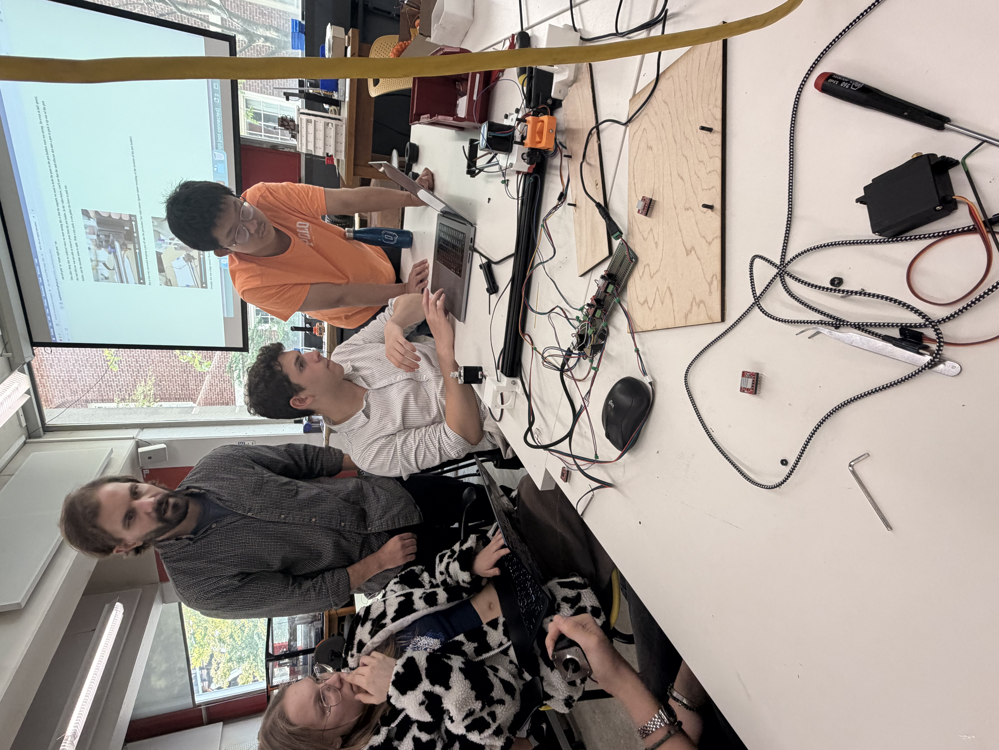
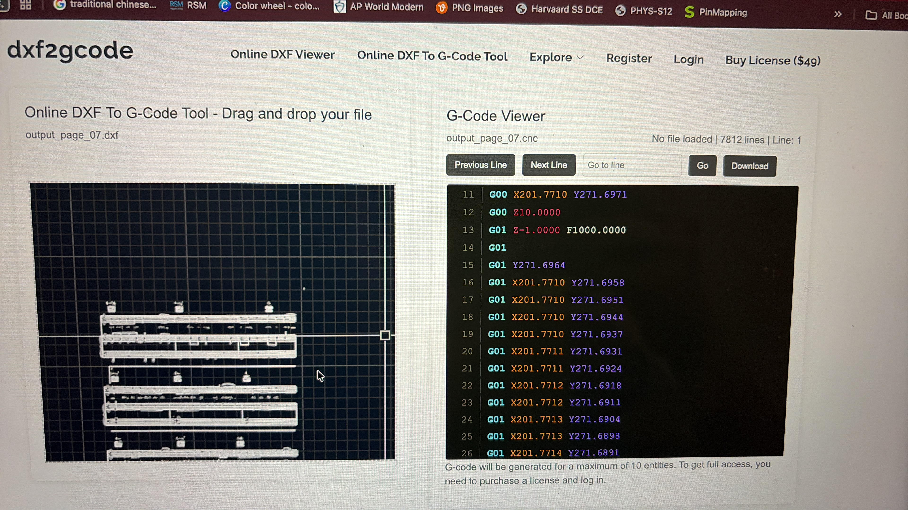

Document your machine, see the PS70 website for more details. Only one person needs to have documentation on their website.
This project started off on a pretty rough. My group consisted of Micheal, Emma, Alex, and me. Our kits had parts that weren't the right size, breadboards that didn't work, we built the machine wrong several times, and the code simply refuse to work. The person who was in charge of the coding was Alex, since. Well. coding was not me nor emma's strong suit, and Micheal was an all-rounder. This left me and Emma to do more of the physical parts of the machine, while Alex struggled with the coding. After asking Claudia, Max, Matthew, Hannah, and Nathan, a day later we got it to work.
We initially planned to make a machine that can draw out lines in graphite such that when electric wires are hooked up, they can play the song we coded in. After realizing we don't have the time, we changed it to draw the music sheet of the song 'Circles' by Post Malone, instead of. Legitimately drawing a circle.

Most of my role was help soddering and finding tools, and I tried to find the GCode of the music sheet 'Circles'. Emma and I were also in chrage fo the end effector. Emma in particular 3D printed out parts to hold the wouuld be wire, but it saddly didn't come to fruition.
